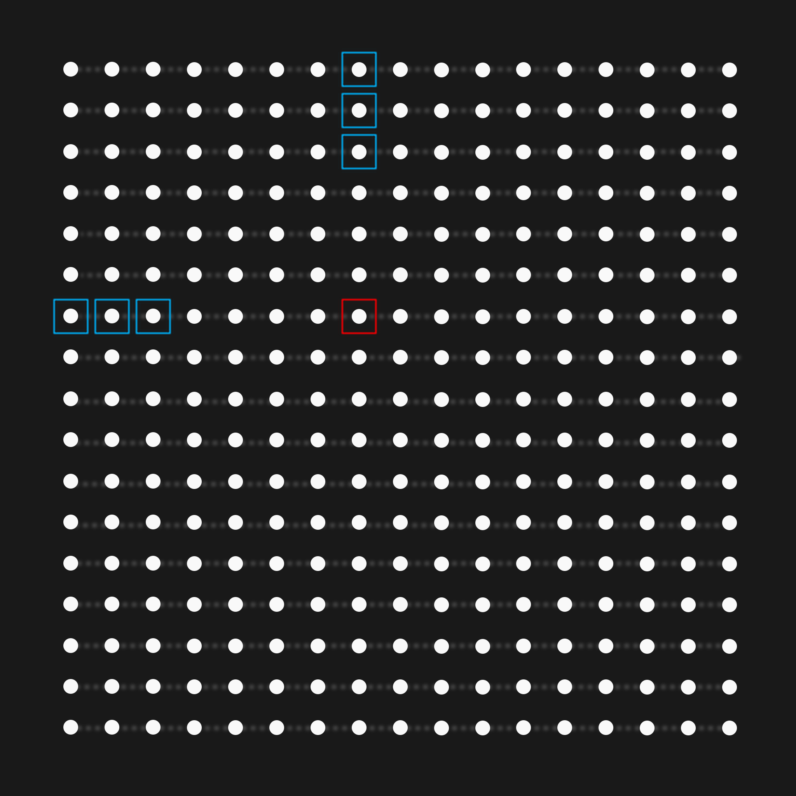
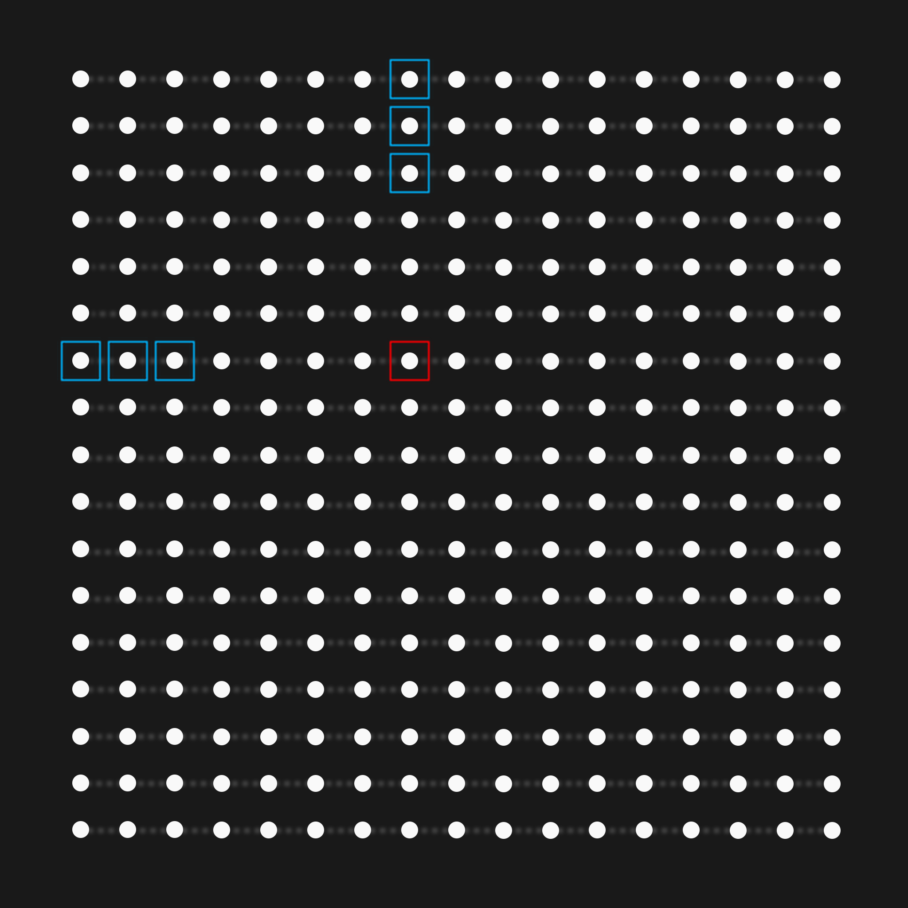

Just how strong are CPUs?
The shortcut problem
e -> c -> d: 9
e -> f -> d: 6
|
The solution
\[\begin{aligned}
S_{ij} = \min_{k=0..N}(A_{ik} + A_{kj})
\end{aligned} \]
Rules:
- Do not change the algorithm
- Exact same FP output
- Use all CPU resources
- No GPU
Baseline code
N = 400
Runtime: 350ms
Is that fast?
Flips and Flops
How do we measure performance?
FLOPS = Floating point Operations Per Second
GFLOPS = Giga Floating point Operations Per Second
GFLOPS = 109 FLOPS


What can my lil' Ryzen 9 5950x do?
(16 cores)
x (3.4GHz)
x (8 FOPs)
x (2 OPS)
= 870 GFLOPS
= 870 GFLOPS
How many operations did we do?
FLOPs = 2 x 4003 = 0.12 GFLOPs in 350ms= 0.36 GFLOPS
Time to Optimize
N = 400 -> 30ms
-> 4.2 GFLOPS
An 11x speedup
And yet we're only using 0.5% of the potential
Parallel code
A 6x speedup
Why not 16x? N = 9500 -> 12 GFLOPS
Reading data is slow
Access pattern

 


N = 9500
-> 31 GFLOPS

Instruction level parallelism
- Fetch: get instruciton
- Decode: interpret instruciton + read effective address
- Execute: perform operation
- Fetch: get instruciton
- Decode: interpret instruciton + read effective address
- Execute: perform operation
Is it fast?
90 GFLOPS (3x speedup)
SIMD
Single Instruction Multiple Data
| f0 | + | g0 |
| f1 | + | g1 |
| f2 | + | g2 |
| f3 | + | g3 |
| ... |
Advanced Vector eXtensions
| f0123 | + | g0123 |
| f4567 | + | g4567 |
| ... |
AVX Caveats
- Compiler support
- Platform specific
- Alignment
AVX-256
Is it fast?
160 GFLOPS (1.8x speedup)
2*4*2500^2 = 50MB
2*4*4000^2 = 128MB
50MB vs 128MB
:)
Data access
0.5 update / read
Can we do more update / read?
1 update / read
1.5 update / read
Is it fast?
420 GFLOPS (2.5x speedup)
Why not 8 reads / 16 updates?
AVX-256 only has 16 vector registers
6 reading + 9 accumulating = 15
8 reading + 16 accumulating = 25
-> register spilling
(AVX-512 has 32 vector registers)